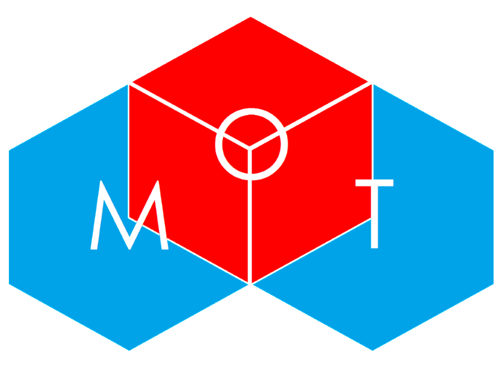

MyOwnTrainer is an app that monitors the number of reps that the user does by collecting
and analyzing data from the
Myo Armband.
Created by a team of 4, winning Third Place at
SportsHack . Bruce Croxon judged the event and gave
our team feedback on the App.
| Home | Projects | GitHub |